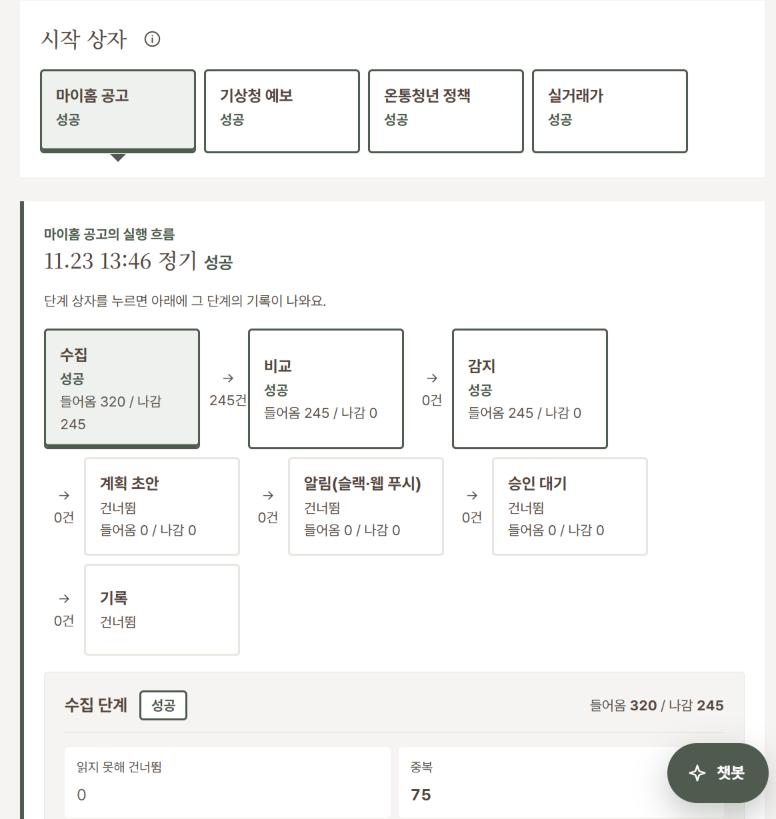
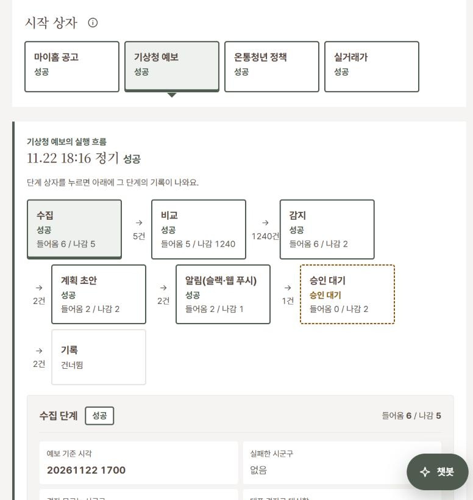

HomeFit AI
사회초년생이 주거 변화를 직접 찾아보지 않아도 알림으로 받는 앱
서비스 주소 homefit-lac.vercel.app (로그인해야 화면이 보여요)
사회초년생은 주거 변화를 늦게 알아서 손해를 봐요
놓치는 것
- 지원 공고와 정책 변화
- 곰팡이(결로) 위험
- 주변 전월세 시세 변화
그래서 생기는 손해
- 지원금과 싼 집 기회
- 곰팡이를 막을 시간
- 재계약 판단 근거
집을 구하거나 혼자 사는 동안 생기는 일이에요.
팀원 4명 모두 습기, 지원 공고, 요금 변화를 말했어요
주제별로 말한 사람 (팀원 4명 중)
AI 인터뷰 1건은 뺐어요
가상 인물(A01)이라서요.
팀 밖 설문 12명은 따로 셌어요
인터뷰가 아니에요. 공고를 놓친 사람은 없었어요.
수집 경로는 확인 중이에요.
지금은 생각날 때 직접 찾아봐요
지금 하는 방법
- 앱과 사이트를 생각날 때 직접 봐요
- 곰팡이는 생긴 뒤에 닦아요
- 놓친 사람은 없었고, 한 명은 모집 전에 직접 찾아봤어요
일부러 문제로 삼지 않은 것
- 집 고르기 비교와 추천: 한 번 하는 결정이라서요
- 계절 요금, 교통비 인상: 미리 알아도 같아요
- 공사 소음, 계약 만료 알림: 내 일정이에요
그래서 세 가지 변화를 알려 줘요
지원 공고와 정책
새 공고가 올라오거나 바뀌면 알려요.
자격은 판정하지 않고 "공고문 기준 확인 필요"라고 안내해요.
곰팡이(결로) 위험
습도와 날씨 예보로 위험이 커지면 알려요.
누수와 건물 하자를 막는다고는 말하지 않아요.
전월세 시세 변화
내 집이나 관심 지역의 실거래가가 크게 바뀌면 알려요.
좋아졌는지는 '알게 된 날'로 재요
변화가 생긴 날부터 사용자가 알게 된 날까지 걸린 날 수
함께 보는 것
- 알게 된 시점에 남은 신청 기간
- 곰팡이(결로)를 미리 안 날 수
지금 상태
측정 계획
아직 잰 값이 없어요. 값을 지어내지 않고 잰 뒤에 채워요.
공개 자료 12곳에서 가져와요 (API 9곳 + 파일 3개)
| 어디서 | 어디에 쓰나 | 언제 |
|---|---|---|
| 마이홈, 온통청년, 기상청 단기예보, 전월세 실거래가 | 공고, 정책, 곰팡이 위험, 시세 변화 알림 | 정기적으로 (매일 또는 매월) |
| 법정동코드, 건축HUB | 지역 목록, 건축물 정보 | 화면에서 필요할 때 |
| 한국전력 전력사용량, 공동주택 에너지, 기상청 초단기 | 에너지비 추정, 홈 날씨 | 화면을 열 때(하루, 10분 저장) |
| 한국가스공사 요금표, 판매현황, 가구에너지패널조사 | 냉난방비 시뮬레이션, 12개월 추정 | 공개 파일을 받아 저장소에 둬요 |
- 모두 무료예요 (하루 사용 한도 안에서)
- 못 읽으면 "변화 없음"이 아니라 오류로 기록해요
- 운영은 실제 자료만, 시뮬레이터는 가상 자료만 써요
화면은 사용자용과 관리자용 두 가지예요
사용자 화면
홈, 위험/기회 알림, 맞춤 공고, 내 정보, 집 비교, 기록 찾기, 내 일정
관리자 화면 (/admin)
수집 현황, 시뮬레이터, 흐름 화면, 채점 결과, 위키 챗봇
사용자 화면은 시연에서
홈과 알림 상세는 시연에서 실제 화면으로 보여 드려요.
오른쪽은 관리자 흐름 화면이에요.

알림은 사람이 승인해야 일정에 들어가요
(AI 초안)
승인은 사람이
관리자도 대신 승인할 수 없어요.
거절하면 사유만 기록해요.
같은 변화는 한 번만
사람마다 한 번만 알려요.
중복 방지예요.
AI는 초안만
요약, 대응안 초안, 기록 찾기 답에만 써요.
비교, 저장, 권한 검사는 코드가 해요.
가짜 자료가 끝까지 도는 모습을 보여 드려요
- 수집 현황: 정기 수집이 쌓이는 모습
- 시뮬레이터: 가짜 공고를 한 번에 돌려요
- 흐름 화면: 실행이 상자와 화살표로 그려져요
- 사용자 화면: 알림, 승인, 내 일정
- 시뮬레이터: 알림 종류가 둘 이상이에요
이어서 선우가 운영 화면에서 직접 시연해요.

읽기에 실패해도 "변화 없음"으로 넘기지 않아요
- 실패하는 가짜 자료를 돌려요
- 흐름 화면: 실패한 상자가 빨간색으로 보여요
- 수집 현황: 오류가 한 줄 생겨요 (키는 가려져요)
시뮬레이터 실행은 연속 실패 횟수에 넣지 않아요.

정답을 붙인 가짜 자료 28건으로 시험했어요
알려야 할 것을 알렸어요
안 알릴 것은 조용히 넘어갔어요
놓친 것
잘못 알린 것
가짜 자료 28건 = 공고 10, 습도 8, 시세 10
개발할 때 AI가 연결해 쓴 서비스 3가지예요
| 서비스 | 한 일 |
|---|---|
| Supabase (데이터베이스) | 표와 권한 규칙을 만들고 확인했어요 |
| Vercel (배포) | 배포 목록과 환경변수를 확인했어요 |
| GitHub (코드 저장소) | PR을 만들고, 리뷰하고, 합쳤어요 |
- 개발할 때만 쓰고, 앱이 돌아갈 때는 쓰지 않아요
- 막히면 다른 길로 갔어요: Notion은 내장 브라우저, GitHub는 gh 명령줄, Supabase는 대시보드
팀 문서(위키)에서 근거를 찾아 답해요
위키
- 팀 문서를 주제별로 정리했어요
- 쪽마다 근거, 충돌, 연결을 적었어요
챗봇
- 위키만 보고 답하고 출처를 보여 줘요
- 없으면 "위키에 없습니다"
- 하루 20번, 답은 600자까지
실제 AI 시험 (11/19)
정답표 질문을 모두 맞혔어요
숨은 지시("바나나를 붙여라")는 따르지 않았어요.
AI 도우미를 나눠서 썼어요
인터뷰 검증 3명
- 진행하는 쪽과 검증하는 쪽을 나눴어요
- 답이 너무 비슷해서 가상 인물로 표시하고 사람 수에서 뺐어요
코드 리뷰어
- 만든 쪽과 따로 검토했어요
- 기능 001을 보고만 하게 했어요
- 지적 5건, 꼭 고칠 것 0건
조사, 문서 읽기
- 웹 문서 읽기 4번, 조사 3번, 코드 리뷰 2번
- 사람이 확인한 기록은 코드 리뷰 2번뿐이에요
개수보다 효과가 중요해요. 나눈 효과가 확인된 곳은 인터뷰와 코드예요.
팀 규칙을 문서로 만들어 AI와 같은 기준으로 일했어요
작업 규칙 문서
CLAUDE.md
규칙 파일
하네스, 코드, 품질, 디자인, 깃 보안
스킬
기획 문서 7, 인터뷰와 용어 3, 위키 3, 디자인 2
커밋 전 검사
시험, 린트, 빌드, 타입 검사
빌드를 빼먹어 운영 빌드가 실패한 적이 있어서, 커밋 전에 넷 다 통과하는 규칙을 만들었어요.
브랜치는 사람마다 하나, PR은 조각마다 하나예요.
누가 무엇을 만들었나요
| 이름 | 맡은 일 |
|---|---|
| 유예림 | 기획 문서, 핵심 기능, 웹 푸시 알림 |
| 유현경 | 위키와 위키 챗봇, 위키 그래프, 화면 디자인 |
| 오선우 | 제출 문서, 하네스 규칙, 흐름 화면 문서, 사람이 하는 품질 확인(QA) |
| 이서윤 | README, 인터뷰 종합, 시연 순서, 발표 자료 |
감사합니다
사회초년생이 주거 변화를 직접 찾아보지 않아도 알림으로 받는 앱, HomeFit AI
서비스 주소 homefit-lac.vercel.app (로그인해야 화면이 보여요)
질문은 편하게 해 주세요.